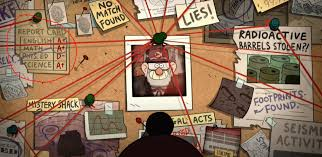
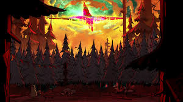

"Tourist Trapped"
Season 1, Episode 1
In the series premiere, Dipper and Mabel Pines spend their summer vacation in Gravity Falls, Oregon, with their great-uncle Stan. They quickly discover that the town is filled with supernatural creatures and mysteries. While exploring the mysterious woods behind the Mystery Shack, Dipper finds a strange journal labeled “3” that describes the town’s supernatural creatures. Their first adventure begins when Mabel starts dating a guy who might not be human.
"Not What He Seems"
Season 2, Episode 11
When Grunkle Stan is arrested by the government and accused of endangering the world, Dipper and Mabel are forced to question everything they thought they knew about him. As the Mystery Shack’s hidden basement laboratory activates a strange machine, time is running out. Dipper wants to stop the machine, but Mabel must make a choice that could change everything.
"Not What He Seems" is a major turning point in Gravity Falls. It transforms the series from a mystery-of-the-week format into a tightly connected, emotional story about trust, identity, and family. Fans consider it one of the best episodes due to its shocking twist, emotional stakes, and rich storytelling.
"Weirdmageddon Part 1, 2 & 3"
Season 2, Episodes 18-20
In the final three episodes of Gravity Falls, the series reaches its most intense and emotional arc: Weirdmageddon. In Part 1, the villainous Bill Cipher succeeds in entering the real world by manipulating Ford and unleashing a surreal, apocalyptic event on Gravity Falls. In an emotional sacrifice, Grunkle Stan volunteers, allowing Bill to be destroyed from within his mind, but losing his memories in the process. However, with the family’s help, Stan gradually recovers. The series ends with Dipper and Mabel saying goodbye to Gravity Falls and returning home, their summer adventure complete and their family stronger than ever.